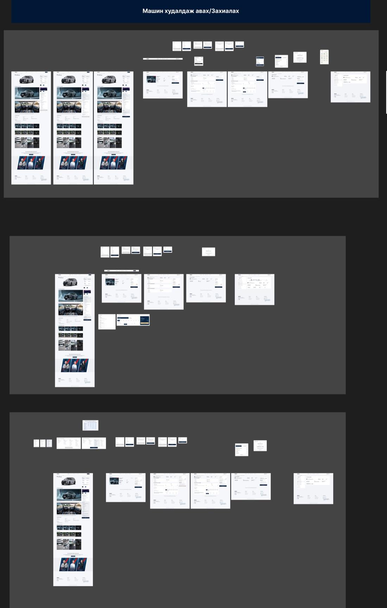
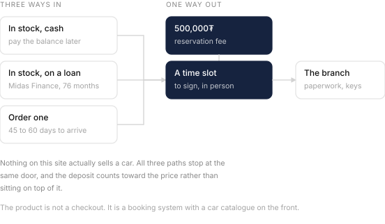
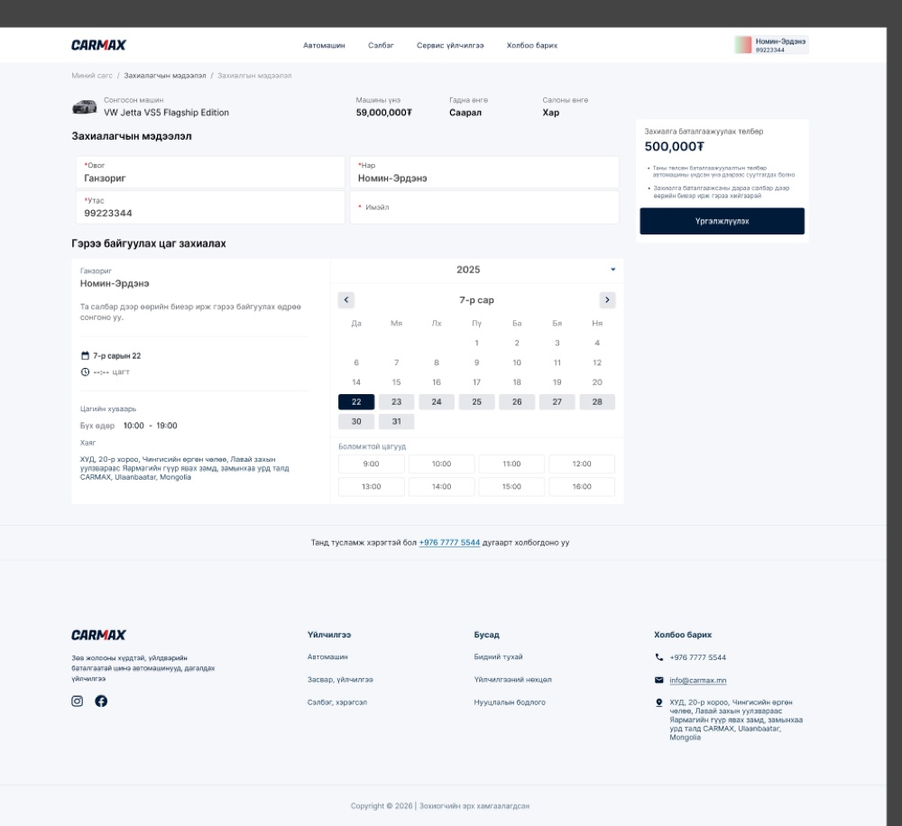
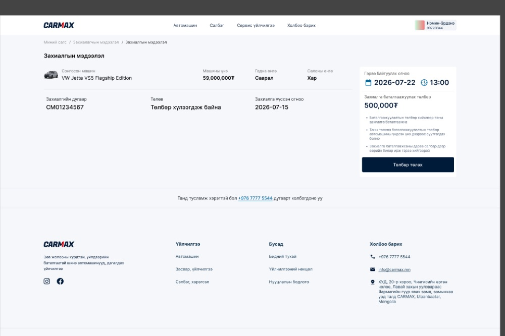
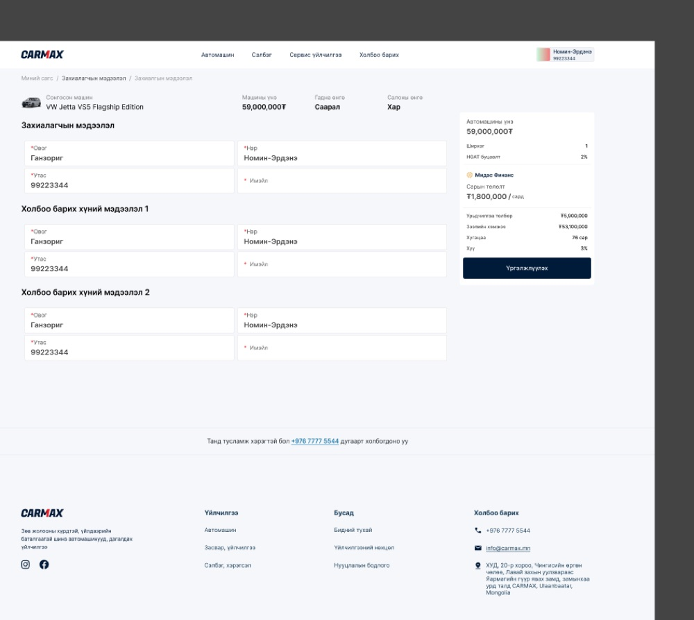

CarMax car eCommerce platform
2026
A car costs 59 million tugrik. Nobody is completing that purchase in a browser, and the design does not pretend otherwise. What this platform actually does is take a deposit and book you an appointment. I audited the flows before development started.1
Three ways to buy one car
The main flows page I was handed is three bands, stacked. Buy something in stock with cash. Buy something in stock on a loan. Or order a car that does not exist yet and wait 45 to 60 days for it.

I laid them side by side first, because stacking them is how I noticed they are mostly the same product. The car page is shared. The order summary is shared. What changes is the middle, where the money gets arranged.
All three stop at the same door

Every path ends on a 500,000₮ reservation fee and a booked time at a branch. The fee is under one percent of the car, and I checked that the copy says it counts toward the price rather than sitting on top of it.
This is not a checkout with a car catalogue in front of it. It is a booking system with a car catalogue in front of it, and knowing which one you are building changes every screen after the listing.
Booking a time to sign

The instruction is plain: choose the day you will come to the branch in person. Underneath the calendar the design puts the opening hours and the full address, and I flagged that as the right call, because that information normally lives three clicks away on a contact page and is needed exactly here.
It also asks for very little. Surname, first name, phone, and an email. No account, no password, no address, nothing the branch is going to ask for anyway when you turn up with your documents. I recommended keeping it that thin.

The loan path collects people

The cash path asks for one person. The loan path asks for three. Below your own details are two more blocks, headed contact person one and contact person two, each wanting a name and a phone number.
That is how consumer lending works here, and I agreed with putting it on the same screen as the rest of the order rather than behind a separate application. I also flagged it as the screen where somebody discovers they need to phone a relative before they can continue, which the team should keep in mind when they read the drop-off numbers later.
What three percent means
The Midas panel shows a 59,000,000₮ car with 5,900,000₮ down, a 53,100,000₮ loan over 76 months, a monthly payment of 1,800,000₮, and an interest rate of 3%.
Those numbers only agree with each other if the 3% is monthly. I ran 53,100,000₮ over 76 months at three percent a month and got 1,781,000₮, which is the number on the screen. At three percent a year it would be 768,000₮, less than half.2
So the figure is right and the label is incomplete. It reads Хүү 3% with no period attached, and a buyer comparing it against a bank rate quoted annually will read it as annual. I recommended adding the one word, and adding the total repayable, which fixes it better.
- Wireframes and design files rather than a live product. Prices, names, order numbers and loan figures are the data in the file, which may be placeholder. This page covers the desktop web flows. There are separate files for the mobile app and for Midas that I have not gone through.
- Standard amortisation, and the agreement with the screen is close enough that it is not a coincidence. Monthly quoting is normal for consumer lending in Mongolia. The problem is not the rate, it is that the label does not say which.